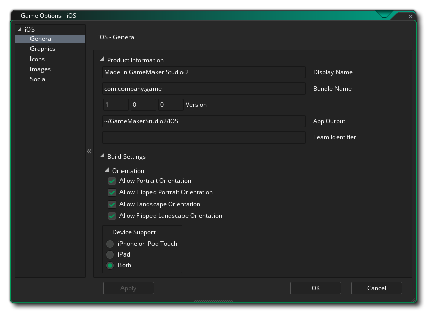
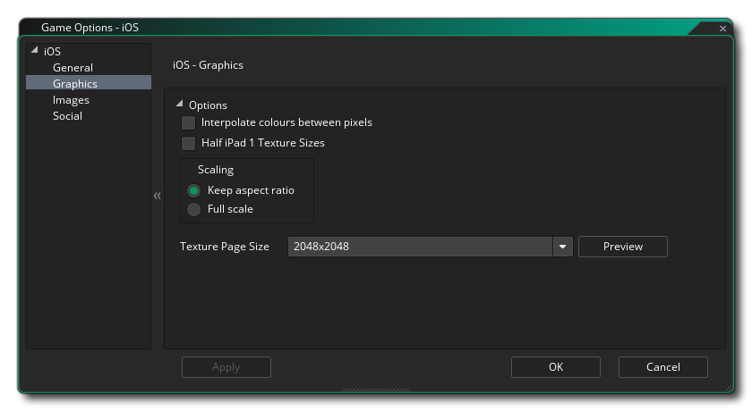
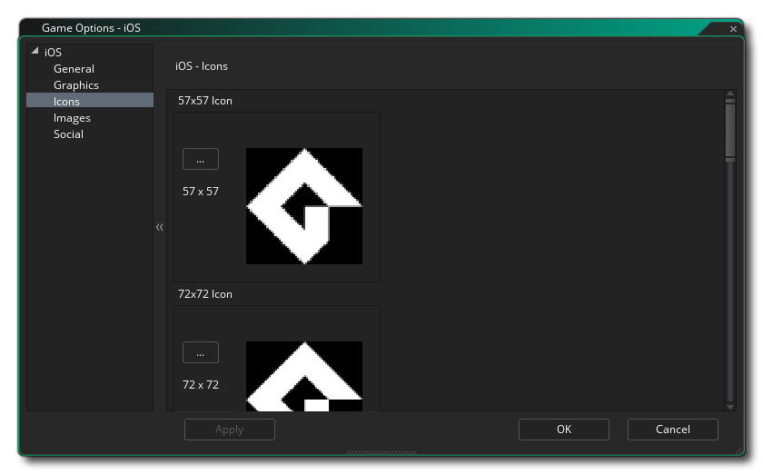
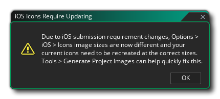
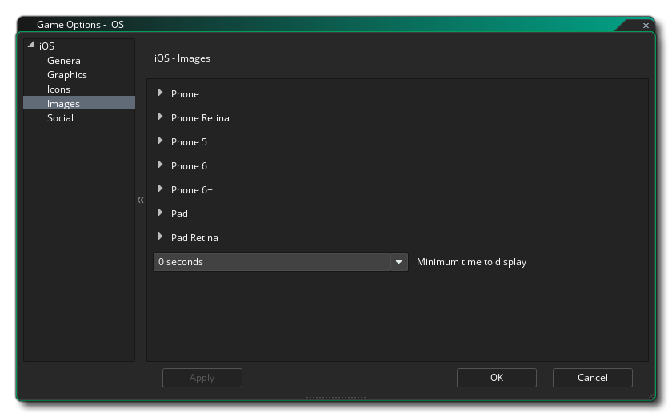

In diesem Abschnitt werden die verschiedenen Optionen beschrieben, die Ihnen zur Verfügung stehen, um zu steuern, wie Ihre iOS-Spielprojekte kompiliert werden. Die verschiedenen Abschnitte sind:

Der erste Teil des Abschnitts Allgemein befasst sich mit den Build-Einstellungen für Ihr Spiel. Zunächst legen Sie die Orientierungen fest, nach denen Ihr Spiel ausgeführt werden kann, um eine optimale Benutzererfahrung zu erzielen. Die verfügbaren Optionen sind:
- Porträt
- Umgedrehtes Portrait
- Landschaft
- Umgedrehte Landschaft
Gehen Sie können dann auf den Device Support Abschnitt mit den folgenden Optionen für die Einstellung, welche Art von Gerät Ziel:
- iPhone oder iPod Touch: iPhone 4 und höher oder iPod Touch-Geräte
- iPad: iPad-Geräte
- Beide: Sowohl iPhone / iPod als auch iPad
Als zweites müssen Sie die Produktinformationen zu Ihrem Spiel eingeben, einschließlich des Anzeigenamens, der Bundle-ID und der Versionsinformationen. Beachten Sie, dass die Bundle-ID im korrekten umgekehrten URL-Format vorliegen muss, damit der endgültige Build des Spiels ordnungsgemäß funktioniert. EG: com.[Company].[GameName]. Hier müssen Sie auch die Team-ID angeben, die Sie zum Signieren der endgültigen Anwendung verwenden möchten, die GameMaker Studio 2 für Sie erstellt. Wenn Sie diese Einstellung hier vornehmen, wird die Team-ID überschrieben, die Sie in den iOS-Einstellungen angegeben haben.

Hier können Sie die folgenden Details zur Anzeige Ihres Spiels ändern, wobei folgende Optionen verfügbar sind:
- Farben zwischen Pixeln interpolieren: Aktiviert die Interpolation, wodurch die Pixel im Wesentlichen "geglättet" werden. Für gestochen scharfe Pixelgrafiken sollte diese Einstellung deaktiviert sein. Wenn Sie jedoch schöne Alpha-Überblendungen und geglättete Kantengrafiken haben, sollten Sie diese Einstellung lieber beibehalten. Standardeinstellung ist deaktiviert.
- Half iPad 1 Textures: Das iPad 1 verfügt über weniger Texturspeicher als neuere Geräte. Sie können diese Option aktivieren, um die Größe der Texturen um die Hälfte zu reduzieren, wenn Sie dieses Gerät als Ziel verwenden oder maximale Kompatibilität erzielen möchten.
- Skalieren: Hier können Sie die Zeichenfläche skalieren, wobei das Seitenverhältnis im Bildschirm des Geräts beibehalten wird, indem Sie an den Rändern "Abstand" hinzufügen, um sie an den Bildschirm anzupassen. Sie können auch festlegen, dass die Zeichenfläche gestreckt wird.
Schließlich gibt es noch die Möglichkeit, die Größe der Textur-Seite einzustellen. Die Standardgröße (und die meisten kompatiblen) beträgt 2048 x 2048, Sie können jedoch zwischen 256 x 256 und 4096 x 4096 wählen. Es gibt auch eine Schaltfläche Vorschau, die die Textur-Seiten für diese Plattform generiert und ein Fenster öffnet, in dem Sie sehen können, wie sie aussehen. Dies kann sehr nützlich sein, wenn Sie die Struktur der Textur-Seiten sehen möchten und verhindern möchten, dass Textur-Seiten größer (oder kleiner) als erforderlich sind.
HINWEIS: Beachten Sie, dass Ihr Spiel umso weniger kompatibel ist, je größer die Texturseite ist.

In diesem Abschnitt können Sie die verschiedenen Symbole hinzufügen, die von den verschiedenen Geräten und den verschiedenen Teilen des iOS App Store benötigt werden. Diese Icons sollten als 24bit erstellt werden .png Bilder in der jeweils angegebenen Größe.
Es ist erwähnenswert, dass GameMaker Studio 2 über ein Project Image Generator- Tool verfügt, mit dem automatisch alle Icons erstellt werden können, die für die verschiedenen Zielplattformen benötigt werden, auf denen Ihr Spiel kompiliert wird. Wenn Sie dieses Tool verwenden, sollten Sie die erstellten Bilder überarbeiten, um sicherzustellen, dass sie Ihren Anforderungen entsprechen.
HINWEIS: Beim Importieren eines älteren Projekts wird möglicherweise die folgende Warnung angezeigt:  Dies geschieht, weil die aktuelle iOS-Zielversion das Format der erforderlichen Symbole geändert hat, seit das Projekt zuvor geladen wurde. Sie müssen alle Symbole neu erstellen, da sie durch die generischen GameMaker Studio 2 Symbole ersetzt werden (dies kann mit dem oben genannten Project Image Generator- Tool schnell erledigt werden).

In diesem Abschnitt können Sie separate Grafiken als Startbildschirme (das Bild, das beim Laden der App kurz angezeigt wird) für jedes der verschiedenen iOS-Zielgeräte hinzufügen. Diese Bilder müssen als einzelne 24-Bit *.png-Bilder ohne Transparenz erstellt werden und müssen die richtige Größe für jedes der erforderlichen Geräte und Ausrichtungen haben. Sie können auch eine Mindestzeit für die Anzeige der Begrüßungsbildschirme im Dropdown-Menü unten einstellen (von 0 bis 10 Sekunden).
Beachten Sie, dass GameMaker Studio 2 über ein Project Image Generator- Tool verfügt, mit dem automatisch alle Bilder erstellt werden können, die für die verschiedenen Zielplattformen benötigt werden, auf denen Ihr Spiel kompiliert wird. Wenn Sie dieses Tool verwenden, sollten Sie die erstellten Bilder überarbeiten, um sicherzustellen, dass sie Ihren Anforderungen entsprechen.
In diesem Abschnitt werden verschiedene soziale Funktionen in Ihrem Android Spiel aktiviert. Folgende Optionen können ausgewählt werden:
- Facebook: Wenn Sie die Facebook-Funktionen benötigen, müssen Sie dieses Kontrollkästchen aktivieren und anschließend die Facebook-App-ID und den Facebook-App-Namen angeben. Beachten Sie, dass auf alle Facebook-Funktionen über eine Erweiterung zugegriffen werden kann. Wenn Sie das Kontrollkästchen Facebook verwenden zum ersten Mal aktivieren, werden Sie aufgefordert, die Facebook-Erweiterung vom Marketplace herunterzuladen und zu installieren.
- Push-Benachrichtigungen aktivieren: Damit Ihr Spiel Push-Benachrichtigungen verwenden kann, müssen sie hier zuerst aktiviert werden, da sie sonst nicht funktionieren. Lokale Benachrichtigungen auf Android erfordern keine "GCM Sender ID". Sie müssen sie jedoch hinzufügen, wenn Sie Remote-Benachrichtigungen erstellen möchten.